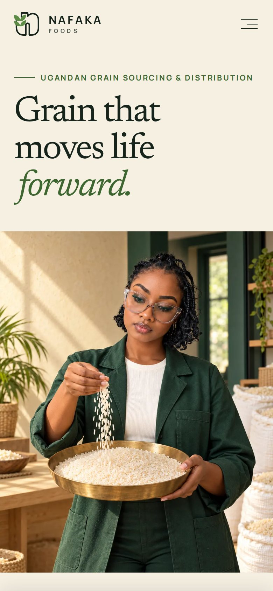
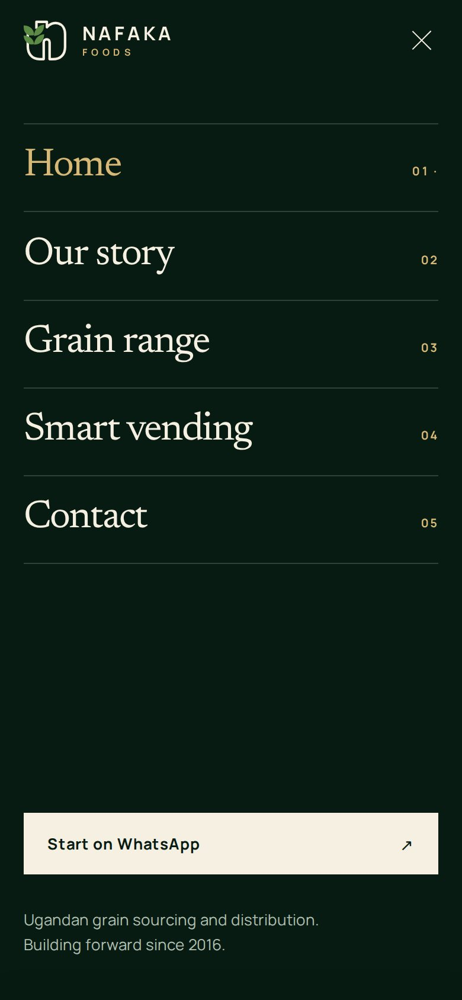
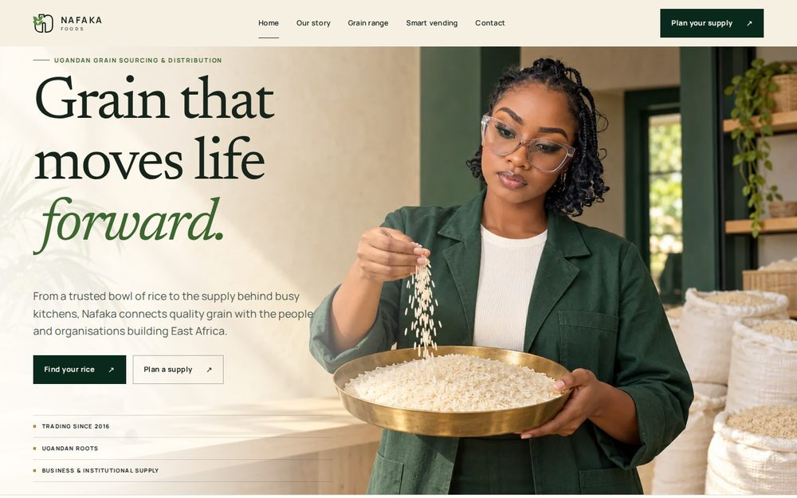
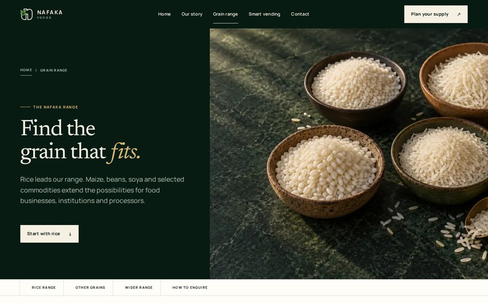
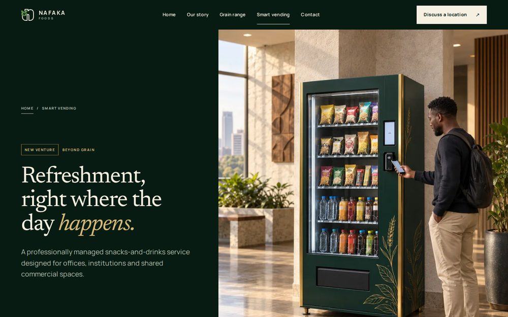
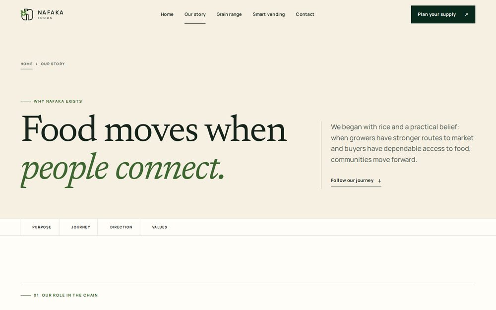
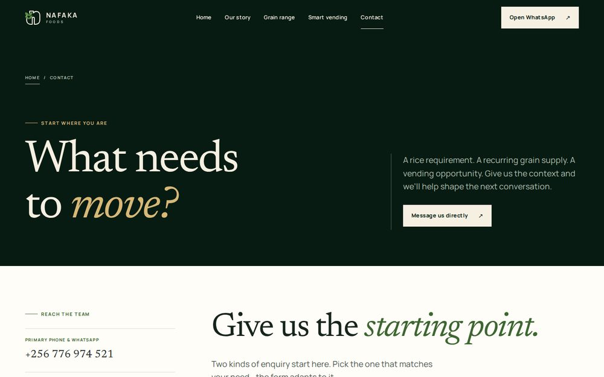

Creative development · Delivery report
A full art-direction, motion, responsive-engineering and production pass over the Nafaka Foods website — what was built, what was verified, and what comes next.
01What was delivered
The company’s positioning, facts, contact details, WhatsApp enquiry logic, page addresses and approved photography are unchanged. Everything around them was rebuilt: the art direction, the layout system, the motion, the accessibility and the production code.
Rice leads. Every rice variety on the range page opens a WhatsApp enquiry with that variety already selected. Grain supply and smart vending are named as two separate routes before the contact form, and the form adapts to whichever the visitor picks — asking for a quantity for grain, and for building context for vending.
| Live website | https://cartelug.github.io/Nafaka_Foods_Website/ |
| Repository | cartelug/Nafaka_Foods_Website |
| Release commit | f58ccedada1470f10ffa7c9e75136464a77c52ee |
| Deployed | 16 September 2026 — GitHub Pages build and deployment, succeeded |
| Pages | Home, Our story, Grain range, Smart vending, Contact, plus a 404 page |
02The creative concept
The approved hero photograph already contained the idea: a specialist letting rice fall into a brass sampling pan. The whole interface is built from that one gesture, so the design belongs to Nafaka rather than being decoration applied afterwards.
Sections are paced deliberately instead of being uniformly coloured, so the page has light and shade as a reader moves down it.
| Opening | Bright and assured — the hero and the brand statement on ivory and rice white |
| The range | Deep forest green, with brass numerals for the rice varieties |
| Who we supply | Back to ivory, as a ruled register of buyers |
| Origin story | The deepest surface, with the Kabale narrative and the milestone figures |
| Smart vending | Brass-lit, with a tighter and more mechanical cadence |
| Closing | Warm rice white, with three named routes into an enquiry |
Centred headings above three identical cards, endless rounded rectangles, gradient blobs, neon glows, floating badges, decorative icon libraries, marquees that run for their own sake, fake loading counters, cursor gimmicks, and sections added only to make the page longer. Where the previous build used an endlessly scrolling banner of commodity names, the same names are now real links into the range — navigation rather than ornament.
03The design system
Each section declares which surface it sits on. That single declaration resolves the background, the text colour, the quiet text, the accent, the rules and the focus ring for everything inside it — which is why the pages look varied without the code becoming a pile of exceptions.
Sampled from the approved photography: the forest workwear, the brass sampling pan, the cream lime-washed wall, the milled rice.
| Deep forest | #071B12 / #0A291D / #123827 | Range, origin story and vending surfaces |
| Rice & ivory | #FFFDF8 / #F6F0E3 / #E8DEC9 | Opening, register and closing surfaces |
| Botanical green | #5C8B46 / #3D6630 | Graphic marks, and a darker tone for small text |
| Brass | #B58A45 / #D8B877 | Rules and numerals; the lighter tone for text on dark |
| Ink | #17241B / #4D574F | Body text and quiet text on light surfaces |
Two greens exist on purpose. The lighter one is used for graphics; a darker one is used for small text, because the lighter green cannot carry the required 4.5:1 contrast at label sizes.
Newsreader for display and editorial emphasis, Manrope for interface and body text. Both are self-hosted, so no third party is involved in rendering the page. Thirteen registers run from the hero headline down to metadata, all scaling fluidly rather than stepping at breakpoints. Italic is reserved for editorial emphasis inside display type and is used nowhere else.
One container, expressed as padding rather than a fixed width, so full-bleed strips can align their first item to exactly the same line as the rest of the page. Compositions reflow at three shared points: where lists become columns, where full-width text splits in two, and where a photograph may sit in a column beside type.
A wide photograph placed in a narrow column crops the subject into a near-square and cuts the very thing the picture is about. Image-beside-text compositions therefore require a genuine landscape frame before they engage. Below that, the layout keeps its stacked form — which is why a large tablet shows the whole photograph rather than a tight crop of it.
04Motion
Movement carries meaning here rather than being applied for its own sake. Each verb has a fixed job, so a reader learns the language of the site without noticing. Nothing animates outside these.
| Verb | Meaning | Used on |
|---|---|---|
| Fall | Arrives downward through a mask | Display type and headlines |
| Advance | Enters from the left, along the direction of supply | Lists, rows and links |
| Open | An aperture lifts and the image settles back | Photography |
| Settle | Resolves in place; carries the stagger | Metadata and supporting copy |
| Draw | The route rule extends left to right | Section rules only |
| 170ms | Pointer feedback — nothing spatial |
| 340ms | A state change the visitor asked for |
| 760ms | Content arriving as the page is read |
| 1150ms | Page-scale choreography |
Some things are deliberately still — body copy in the first screen, the navigation, every form field. That contrast is what makes the movement read.
A single brass grain travels in, settles into the Nafaka mark, and the mark draws itself. The gate then clears downward, uncovering the navigation first while the headline falls in the same direction — about 1.7 seconds, once per visit, and never for a visitor who has asked for reduced motion.
A preloader that can trap a page is worse than none, so four separate mechanisms can each end it independently:
05The pages
Two separate hero compositions. On a phone: the headline, then the whole photograph inside the first screen, then the supporting copy and actions. On a laptop: the photograph framed below the navigation, with the type set on the lime-washed wall the photographer left empty and held to 44% of the width so no letterform ever crosses the subject. Below it, the commodity register, the brand statement, the rice range, a ruled index of buyers, the origin split, the vending hand-off and a closing panel with three named routes.
A documentary chronology rather than a corporate timeline: the year is the anchor and each entry advances from the route line. Purpose, direction and values sit on the same register system. No milestones were invented — the page carries 2016, 2023 and a forward-looking entry, and nothing else.
Rice leads. Each variety is a full-width row that opens an enquiry with that variety already selected. Maize, beans and soya form a ruled three-name register rather than coloured cards, and the wider scope sits in a separate note. No technical specifications, grades or pack sizes were invented; the page says these are confirmed by the team.
A tighter, more mechanical cadence: tabular spec columns, a five-step placement sequence, squarer rules. Distinct from the grain pages while staying recognisably Nafaka. The upright vending photograph now runs in an upright frame, so the machine, the contactless reader and the person all stay inside the crop.
Two routes — grain supply and smart vending — are named before the form, and either one sets the form in place. Inline validation with messages that never rely on colour alone, visible focus, a live status message, and the WhatsApp draft shown in full for review before anything opens. Nothing is ever sent automatically.
Every interaction has a touch equivalent. There is no information anywhere on this site that can only be reached with a mouse, and the mobile menu is built on a native browser control so it opens even with JavaScript switched off.
06How it looks
The phone screen was treated as the highest-priority surface, on the assumption that a buyer most often opens the link from a WhatsApp message. So it is its own composition rather than the desktop one stacked — and the whole photograph lands inside the first screen.


07The pages on a laptop





08Photography
No photograph was replaced, generated, recoloured or moved to a different subject. Each one is still used in exactly the role it already held, and an automated check now fails the build if a role moves between pages.
| Image | Role |
|---|---|
| Rice hero | Homepage hero — separate desktop and upright mobile compositions |
| Four rice bowls | Homepage range stage and the Grain range masthead |
| Kitchen buyer | Homepage origin story |
| Vending machine | Homepage vending band, and the Smart vending masthead |
Only through art direction: the existing desktop and mobile variants, controlled crops, fixed aspect frames so nothing shifts while loading, aperture reveals, parallax capped at a very small distance, and two soft tonal veils placed so the headline stays legible over the photograph without washing out the light the photographer captured.
One deliberate change: the Smart vending page now serves the upright vending composition at every width, because that page’s picture column is an upright frame. It is the same approved photograph in the variant prepared for that shape — and the result is that the machine, the reader and the person all stay in the crop, where previously the person was cut off.
The campaign imagery is illustrative brand photography. It is not documentary evidence of Nafaka staff, customers, facilities, stock or certifications, and the website does not present it as such. This is recorded in the repository alongside the images.
09Accessibility
A Ugandan grain business selling to schools, health facilities and government institutions should have a website those institutions can actually use. Accessibility was treated as a quality of the design rather than a checklist applied at the end.
Some people experience motion sickness from moving interfaces, and their device can say so. On this site that setting produces the same compositions arriving instantly — no preloader, no parallax, no scroll effects, and nothing left invisible. It is a designed mode, not a broken version of the page.
10Engineering & performance
The site targets real devices on ordinary mobile networks, not flagship handsets on office broadband. There are no frameworks and no third-party dependencies of any kind — nothing on the page is fetched from anyone else’s server.
| File | Size | Sent as |
|---|---|---|
| Stylesheet | 73.5 kB | 16.7 kB compressed |
| Main script | 30.0 kB | 8.8 kB compressed |
| Enquiry builder | 1.5 kB | 0.8 kB compressed |
| Homepage markup | 22.9 kB | 5.7 kB compressed |
| Two brand fonts | 34.3 kB | Self-hosted, subset |
The stylesheet is heavily commented on purpose, so whoever maintains it can read the reasoning. Comments cost nothing once compressed.
Everything the motion system needs is built into modern browsers. A library would have added weight to every page load and created a second source of truth for timing, without changing a single frame on the devices this site is built for.
11Testing
The site was not signed off by looking at the code. It was loaded in a real browser and driven automatically — the checks below all pass against the exact version that is live.
The automated checks inspect the generated WhatsApp link as text. They never open it and never contact any external service, so no test message has ever reached the business number.
12Forward plan
These are recommendations in priority order, not commitments. Nothing here is scheduled or priced — see the note at the end of this section.
Costs nothing and improves the site immediately. The details listed on the final page were deliberately left out rather than invented. Each one confirmed is a question a buyer no longer has to ask.
The site currently lives at a github.io address. A Nafaka domain would carry considerably more weight with an institutional buyer, improve search visibility, and allow matching business email. GitHub Pages supports this directly and issues a certificate automatically.
The single biggest available gain in credibility. Genuine photographs of Nafaka’s own rice, people, stock and premises would let the site show the business rather than represent it. The layouts are already built around the same crops, so replacement is straightforward — the guidance is recorded in the repository.
There is currently no measurement of any kind. Knowing how many people reach the contact page, which rice varieties are opened most, and how many enquiries begin would turn the site into something that can be improved with evidence rather than opinion. This should be chosen with privacy in mind.
As grades, varieties or vending locations change, the pages should follow. The build is arranged so the shared header, footer and metadata are written once, which makes routine edits low-risk.
This document deliberately contains no fees, rates or timelines. None were agreed for this pass, and inventing them would be worse than leaving them out. Any of the items above can be quoted separately once scope is chosen.
13Still to confirm
Everything below was left off the website on purpose, because it could not be confirmed. Publishing a guess about any of it would risk a commitment the business had not actually made. Each item is ready to be added as soon as it is confirmed.
| Area | Not published |
|---|---|
| Product | Pack sizes, minimum order quantities, current grades, current stock |
| Commercial | Prices, payment terms, discount structures |
| Delivery | Delivery times, delivery guarantees, geographic coverage |
| Credentials | Certifications, customer counts, named clients, partnerships, market share |
| Capacity | Warehouse capacity, branch locations, stocking frequency |
| Vending | Payment technology, machine capacity, refill schedules, availability guarantees |
The two company documents provided list different street addresses. Rather than choose between them, the website publishes only the postal address they share — P.O. Box 10463, Kampala. Confirming the correct street address would let a physical location be shown, which matters to institutional buyers.
| Live website | https://cartelug.github.io/Nafaka_Foods_Website/ |
| Source code | github.com/cartelug/Nafaka_Foods_Website |
| Release commit | f58ccedada1470f10ffa7c9e75136464a77c52ee |
| Technical notes | REVIEW.md in the repository |
| Image provenance | assets/IMAGE-PROVENANCE.md in the repository |
The website is a static site. It requires no build step, no server and no database, and hosting is currently free. That is a deliberate choice: it keeps running costs at essentially nothing and means there is no software to keep patched.